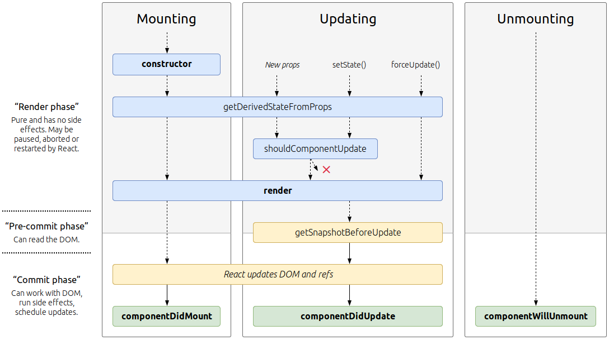

React

React is a modern and open-source JavaScript library for building user interfaces based on ES6. Originally, it has been developed by a software engineer at Facebook and is still being maintained by Facebook (among others).
React allows developers to create large web-applications that use data and can change over time without reloading the page. It aims primarily to provide speed, simplicity, and scalability. React processes only user interfaces in applications. This corresponds to View in the Model-View-Controller (MVC) pattern, and can be used in combination with other JavaScript libraries or frameworks in MVC, such as AngularJS.
The smallest React example looks like this:
ReactDOM.render(
<h1>Hello, world!</h1>,
document.getElementById('root')
);>
Check the docs and Tutorial for more information.
Props
Props are the component's configurations that you pass to instances. They are received from the above component and immutable. For detailed information check Components and Props
State
The state stores internal values of a component. It's a serializable representation of one point in time—a snapshot. The state can be manipulated within a component via setState. For detailed information check State and Lifecycle
Lifecycle
 Image source, last accessed 01/03/2019
Check State and Lifecycle
JSX
React components are typically written in JSX, a JavaScript extension syntax allowing quoting of HTML and using HTML tag syntax to render subcomponents. HTML syntax is processed into JavaScript calls of the React framework. Developers may also write in pure JavaScript. An example of JSX code:
import React from 'react';
class App extends React.Component {
render() {
return (
<div>
<p>Header</p>
<p>Content</p>
<p>Footer</p>
</div>
);
}
}
export default App;
Syntactic sugar for React